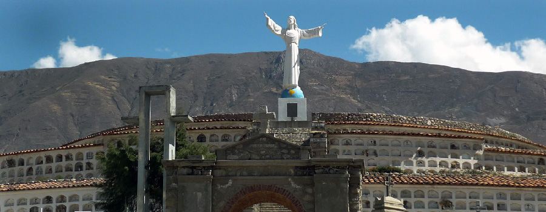

Yungay
La provincia de Yungay se encuentra localizada en la región de Ancash. En esta zona del país se han localizado las cuevas que parecerían haber albergado al hombre más antiguo del territorio. La Provincia de Yungay tiene como fecha de creación el día 28 de octubre del año 1904.
Entre los atractivos turísticos que se pueden encontrar en Yungay podemos encontrar sitios tanto para la práctica del turismo ecológico como también turismo arqueológico.
TURISMO ECOLÓGICO EN YUNGAY
Laguna de Llanganuco - Que comprende a las lagunas Chinancocha y Orconcocha, que quieren decir “laguna hembra” y “laguna macho” respectivamente y que tienen como origen los deshielos que se ocasionan por los nevados circundantes como son: El Huascarán, el Huandoy, el Yanapaccha, el Pisco y el Chopicalqui.
Nevado de Huascarán – Comprendido dentro del Parque Nacional del Huascarán. Se trata de un imponente nevado considerado la montaña más alta de la zona tropical del mundo.
TURISMO ARQUEOLÓGICO EN YUNGAY
Cueva de Guitarrero - Que presenta una antigüedad aproximada de 12,560 años a.C. por lo que habría sido la morada del hombre más antiguo del país. En sus las paredes se encuentran pintados restos de diferentes pinturas rupestres.
Ruinas de Huansakay – Donde floreció el pueblo pre-incaico de Yungay y en el cual se puede observar la fortaleza de Huansakay.
Ruinas de Etzahuain – Cuyo significado es “La Casa del Sol”, que son unas ruinas preincaicas en el distrito de Mancos.
Ruinas de Orqotunan – Cuyo significado en español es “Sitio despoblado donde viven hombres del sexo masculino”, y que son ruinas de una posible ciudadela hallada también en Mancos.
OTROS ATRACTIVOS TURÍSTICOS DE YUNGAY
Campo Santo – Junto con el cementerio que se encuentra sobre la misma ciudad. Se trata de un escenario que recuerda el terremoto y alud acontecido en la zona en el año 1970.
Cristo de Yungay – Cuya construcción data de mediados de los años 60. Se localiza sobre el Campo Santo de Yungay.
Acerca de las festividades del lugar podemos encontrar como las más resaltantes: El Aniversario por la Creación Política de la Provincia de Yungay, cuya fecha central es el 28 de octubre. Además del Aniversario del Sismo-Alud de 1970, llevado a cabo el 31 de mayo, donde se realiza una peregrinación al Campo Santo, junto con la celebración de la fiesta por el señor de Mayo